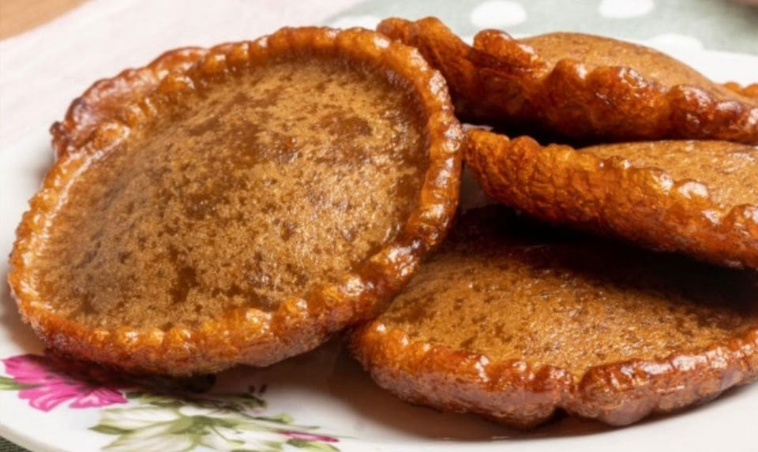
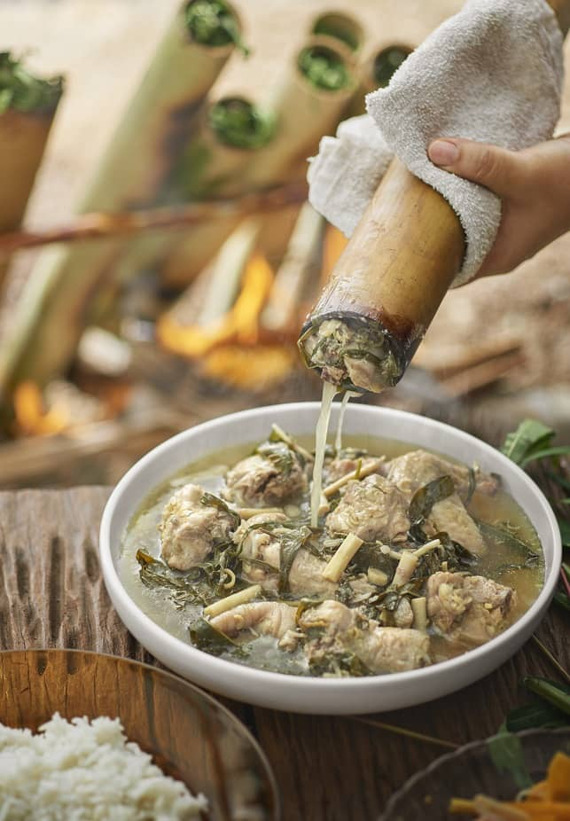
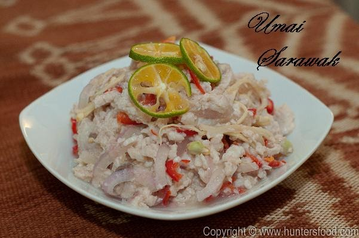

Penyaram
- Kuih tradisional yang diperbuat daripada tepung beras, tepung jagung, santan, dan minyak.
- Daun pandan kadang-kadang ditambah untuk aroma.
- Digoreng dan dibalik hingga garing kedua-dua belah.
- Disajikan panas dan mudah ditemui di pasar tamu.

Ayam Pansuh
- Hidangan tradisional popular di Borneo, terutama di Sarawak, Malaysia.
- Ayam dimasak dalam buluh bersama air, menghasilkan sup dan perasa.
- Ditutup dengan daun ubi kayu semasa memasak.
- Rasa unik dan aroma khas dari buluh.
- Disukai ramai di kawasan tersebut.

Umai
- Terdiri daripada ikan mentah yang dihiris nipis.
- Dicampur dengan bawang, cili, cuka, garam, dan jus limau.
- Rasanya pedas dan masam, menyerupai sashimi.
- Biasanya dinikmati oleh nelayan.